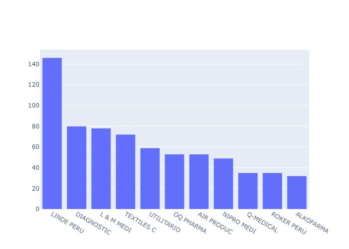
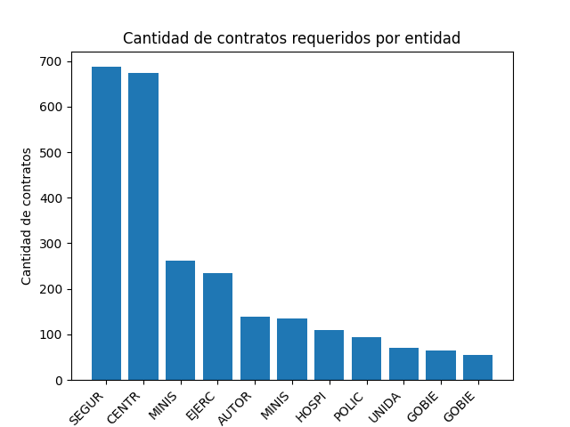
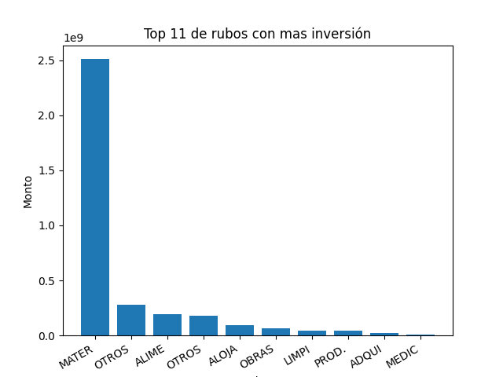

1. Datos
La data utilizada para generar toda la base de datos y las visualizaciones puede ser descargada en el siguiente aqui. El conjunto de datos de las empresas empadronadas en la sunat posee los siguientes campos:
- Ruc
- Razon Social
- Estado del contribuyente
- Condicion de domicilio
- Ubigeo
- Tipo de via
- Nombre de via
- Codigo de zona
- Tipo de zona
- Numero
- Interior
- Lote
- Departamento
- Manzana
- Kilometro
El conjunto de datos que contiene los contratos realizados para convatir la pandemia posee la siguiente información
- Codigo de la entidad
- Ruc de la entidad
- Entidad
- Departamento de la entidad
- Provincia de la entidad
- Distrito de la entidad
- Fecha del contrato
- Objeto Contractual
- Proceso
- Codigo de convocatoria
- Descripcion del proceso
- Numero de items
- Producto
- Sector
- Ruc del proveedor
- Proveedor
- Rubro del proveedor
- Departamento del proveedor
- Provincia del proveedor
- Distrito del proveedor
Por último el conjunto de datos de las elecciones nos dara una idea mas actualizada de la cantidad de personas ue habitan en un departamento. Este conjunto de datos tiene los siguientes campos
- Ubigeo
- Departamento
- Provincia
- Distrito
- Tipo de elección
- Mesa de Votación
- Estado del acta
- Electores validos
- Electores habiles
- Votos por peru libre
- Votos por fuerza popular
- Votos en blanco
- Votos en nulos
- Votos impugnados
2. Metodología
2.1. Limpiar Datos
Debido a que ambos conjuntos de datos mencionados en la seccion anterior tienen un tamaño conciderable se les parseo para poder introducirlos a una la base de datos NoSQL MongoDB, para asi tener los datos indexados y poder crear diferentes colecciones dependiendo de las visualizaciones que se han creado, esto tambien permite que la data pueda ser actualizada y consultada de una manera rapida. Para poder cargar toda la data a MongoDB se uso la libreria pymongo. Todo este proceso se realizo creando los parsers que se muestran a continuación.
# Codigo para insertar el ruc, la razon social, la condicion del domicilio, el ubigeo y la dirección
def parse_sunat_file(self):
with open(self.sunat_file, 'r', errors='replace', encoding='UTF-8') as sunat_file:
next(sunat_file)
lines_read = 0
companies = []
print(self.db.name)
for company in sunat_file:
if company[0] != "1":
lines_read += 1
company_data_array = company.split('|')
address = f'{company_data_array[5]} {company_data_array[6]} {company_data_array[9]}'
companies.append({
'ruc': company_data_array[0],
'razon_social': company_data_array[1],
'estado_contribuyente': company_data_array[2],
'condicion_domicilio': company_data_array[3],
'ubigeo': company_data_array[4],
'direccion': address
})
self.db.companiesList.insert_many(companies)
print(f'Cantidad de documentos en la base de datos: {self.db.companiesList.count_documents({})}')
# Codigo para obtener la direccion de las entidades que requieren los contratos y los proveedores, e insertalor
# a una base de datos
def parse_covid_contract_file(self):
data = pd.read_excel(self.covid_contracts_file)
df = pd.DataFrame(data, columns=['CODIGOENTIDAD', 'RUC_ENTIDAD', 'ENTIDAD', 'FECHACONVOCATORIA', 'RUCPROVEEDOR',
'PROVEEDOR', 'RUBROS', 'MONTOREFERENCIALSOLES', 'MONTOADJUDICADOSOLES',
'ITEMCONVOCA_UNIDADMEDIDA'])
result = []
for index, row in df.iterrows():
company_data = self.db.companiesList.find_one({'ruc': row['RUCPROVEEDOR']})
company_information = {
'code_entity': row['CODIGOENTIDAD'],
'ruc_entity': row['RUC_ENTIDAD'],
'entity': row['ENTIDAD'],
'competition_date': row['FECHACONVOCATORIA'],
'ruc_provider': row['RUCPROVEEDOR'],
'name_provider': row['PROVEEDOR'],
'heading_provider': row['RUBROS'],
'referential_price': row['MONTOREFERENCIALSOLES'],
'official_price': row['MONTOADJUDICADOSOLES'],
'units': row['ITEMCONVOCA_UNIDADMEDIDA']
}
if company_data:
company_information['ubigeo_provider'] = company_data['ubigeo']
company_information['address_prodiver'] = company_data['direccion']
result.append(company_information)
else:
company_information['ubigeo_provider'] = '0'
company_information['address_prodiver'] = '- - -'
result.append(company_information)
print(index)
if len(result) > 0:
self.db.contractData.insert_many(result)
print(self.db.contractData.count_documents({}))
2.2. Obtener de datos de geográficos
Primero se cruzo la data de el ruc de las empresas y las entidades contratantes, con el padron de intituciones que se obtuvo de la sunat, para poder obtener una dirección. A continuación usuando la libreria Nominatim se obtuvo las latitudes y longitudes de las entidades que realizaron el contrato y de las empresas proveedoras del servicio. Tal como se ven en los snippets de codigo.
# Codigo para obtener la latitud y longitud de los proveedores
def get_location_from_provider(self):
cursor = self.db.contractData
result = []
exclude_companies = []
document_count = 0
for document in cursor.find():
document_count += 1
print(document_count)
if document['address_prodiver'] != '- - -' and document['ubigeo_provider'] != '0':
location = self.geolocator.geocode(document['address_prodiver'], timeout=None, country_codes=['pe'])
print(location)
company_information = {
'code_entity': document['code_entity'],
'ruc_entity': document['ruc_entity'],
'entity': document['entity'],
'competition_date': document['competition_date'],
'ruc_provider': document['ruc_provider'],
'name_provider': document['name_provider'],
'ubigeo_provider': document['ubigeo_provider'],
'address_prodiver': document['address_prodiver'],
'heading_provider': document['heading_provider'],
'referential_price': document['referential_price'],
'official_price': document['official_price'],
'units': document['units']
}
if location is not None:
company_information['lat'] = location.latitude
company_information['lng'] = location.longitude
result.append(company_information)
else:
company_information['lat'] = 0
company_information['lng'] = 0
exclude_companies.append(company_information)
if len(result) > 0:
self.db.companiesLocationData.insert_many(result)
print(f'Cantidad de compañias con ubicación: {self.db.companiesLocationData.count_documents({})}')
if len(exclude_companies) > 0:
self.db.companiesWithNoLocation.insert_many(exclude_companies)
print(f'Cantidad de compañias excluidas: {self.db.companiesWithNoLocation.count_documents({})}')
# Codigo para obtener la latitud y longitud de las entidades
def get_location_from_entities(self):
cursor = self.db.companiesLocationData
result = []
exclude_entities = []
document_count = 0
for document in cursor.find():
document_count += 1
entity_data = self.db.companiesList.find_one({'ruc': str(document['ruc_entity'])})
if entity_data is not None and entity_data['direccion'] != '- - -':
location = self.geolocator.geocode(entity_data['direccion'], timeout=None, country_codes=['pe'])
print(document_count)
company_data = {
'code_entity': document['code_entity'],
'ruc_entity': document['ruc_entity'],
'entity': document['entity'],
'competition_date': document['competition_date'],
'ruc_provider': document['ruc_provider'],
'name_provider': document['name_provider'],
'ubigeo_provider': document['ubigeo_provider'],
'address_prodiver': document['address_prodiver'],
'heading_provider': document['heading_provider'],
'referential_price': document['referential_price'],
'official_price': document['official_price'],
'units': document['units'],
'provider_lat': document['lat'],
'provider_lng': document['lng']
}
if location is not None:
company_data['entity_lat'] = location.latitude
company_data['entity_lng'] = location.longitude
result.append(company_data)
else:
company_data['entity_lat'] = 0
company_data['entity_lng'] = 0
exclude_entities.append(company_data)
if len(result) > 0:
self.db.fullContractData.insert_many(result)
print(self.db.fullContractData.count_documents({}))
if len(exclude_entities) > 0:
self.db.noLocationEntity.insert_many(exclude_entities)
print(self.db.noLocationEntity.count_documents({}))
2.3. Obtener los representantes legales y deuda coactiva
En este paso se creo un crawler de la pagina de la sunat para poder obtener de manera automatica los datos de todos los representantes legales, tanto de los proveedores como de las entidades usando el numero de RUC de cada una respectivamente. Los datos obtenidos de cada representante legal son:
- Número de DNI
- Nombres y Apellidos
- Cargo oficial que ocupan en el proveedor o entidad
- Desde que fecha ocupan ese cargo
Ademas tambien se pudo los datos de las diferentes deudas que tienen las empresas proveedoras con el estado. Los datos obtenidos de las deudas por proveedor son:
- Monto de la deuda
- Fecha
- Periodo tributario
- Entidad con la cual se tiene la deuda
El crawler fue creado tal como se ve en el snippet de codigo, usando la libreria BeautifulSoup.
#Crawler para obtener data de la pagina de la sunat
class SunatCrawler(DatabaseSettings):
BASE_URL = 'https://e-consultaruc.sunat.gob.pe/cl-ti-itmrconsruc/jcrS00Alias'
def __init__(self):
super().__init__()
def get_html(self, params):
url = f'{self.BASE_URL}?{urllib.parse.urlencode(params)}'
response = requests.post(url, headers={'Content-Length': '0', 'User-Agent': 'PostmanRuntime/7.28.0',
'Accept': '*/*', 'Accept-Encoding': 'gzip, deflate, br',
'Connection': 'keep-alive'})
soup = BeautifulSoup(response.text, 'lxml')
if soup.find('tbody') is not None:
table_body = soup.find('tbody').tr.contents
res = []
for child in table_body:
res.append(child.string.lstrip('\r\n').lstrip(' ').rstrip(' '))
res = [x for x in res if x != '']
return res
return []
def get_legal_rep_data(self, ruc=20481772550):
params = {
'accion': 'getRepLeg',
'contexto': 'ti-it',
'modo': 1,
'desRuc': 'empresa',
'nroRuc': ruc
}
html_data = self.get_html(params)
if len(html_data) == 0:
return {}
return {
'doc_type': html_data[0],
'doc_number': html_data[1],
'full_name': html_data[2],
'job': html_data[3],
'designation': html_data[4]
}
def get_coactive_debt(self, ruc):
params = {
'accion': 'getInfoDC',
'contexto': 'ti-it',
'modo': 1,
'desRuc': 'empresa',
'nroRuc': ruc
}
html_data = self.get_html(params)
res = []
if len(html_data) == 0:
return []
for i in range(0, len(html_data)):
if (i+1) % 4 == 0:
res.append({
'debt_amount': html_data[i-3],
'tributary_period': html_data[i-2],
'coactive_date': html_data[i-1],
'entity_debt': html_data[i]
})
return res
def get_entity_provider_data(self):
legal_representation_cursor = self.db.legalRepresentationInformation
contract_list = []
valid_contract_list = []
provider_list = {}
full_contract_document = self.db.fullContractData
for document in legal_representation_cursor.find():
print(f"Entity ruc: {document['ruc_entity'] } \n")
print(f"Provider ruc: {document['ruc_provider']} \n")
entity_legal_designation_date = dateparser.parse(document['legal_rep_entity_designation_date'],
date_formats=['%Y-%m-%d'])
provider_legal_designation_date = dateparser.parse(document['legal_rep_provider_designation_date'],
date_formats=['%Y-%m-%d'])
entity_location = full_contract_document.find_one({'ruc_entity': document['ruc_entity']})
provider_location = full_contract_document.find_one({'ruc_provider': str(document['ruc_provider'])})
if entity_location is None or provider_location is None:
continue
contract_data = {
'entity_code': document['code_entity'],
'entity_ruc': document['ruc_entity'],
'entity': document['entity'],
'entity_legal_rep_doc_type': document['legal_rep_entity_doc_type'],
'entity_legal_rep_doc_number': document['legal_rep_entity_doc_number'],
'entity_legal_rep_name': document['legal_rep_entity_name'],
'entity_legal_rep_job': document['legal_rep_entity_job'],
'entity_legal_rep_designation_date': entity_legal_designation_date,
'entity_lat': entity_location['entity_lat'],
'entity_lng': entity_location['entity_lng'],
'referential_money': document['referential_money'],
'contract_money': document['contract_money'],
'provider_ruc': document['ruc_provider'],
}
provider_data = {
'provider_ruc': document['ruc_provider'],
'provider_name': document['name_provider'],
'provider_legal_rep_doc_type': document['legal_rep_provider_doc_type'],
'provider_legal_rep_doc_number': document['legal_rep_provider_doc_number'],
'provider_legal_rep_name': document['legal_rep_provider_name'],
'provider_legal_rep_job': document['legal_rep_provider_job'],
'provider_legal_rep_designation_date': provider_legal_designation_date,
'provider_heading': document['heading_provider'],
'provider_lat': provider_location['provider_lat'],
'provider_lng': provider_location['provider_lng'],
'coactive_debt': self.get_coactive_debt(document['ruc_provider'])
}
if document['ruc_provider'] not in provider_list.keys():
provider_list[document['ruc_provider']] = provider_data
valid_contract_data = {
**contract_data,
**provider_data
}
contract_list.append(contract_data)
valid_contract_list.append(valid_contract_data)
self.db.contracts.insert_many(contract_list)
self.db.providerDocument.insert_many(list(provider_list.values()))
self.db.validContractData.insert_many(valid_contract_list)
def get_all_legal_rep(self):
cursor = self.db.fullContractData
res = []
count = 0
for document in cursor.find():
entity_legal = self.get_legal_rep_data(int(document['ruc_entity']))
provider_legal = self.get_legal_rep_data(int(document['ruc_provider']))
count += 1
if bool(entity_legal) and bool(provider_legal):
res.append({
'code_entity': document['code_entity'],
'ruc_entity': document['ruc_entity'],
'entity': document['entity'],
'legal_rep_entity_doc_type': entity_legal['doc_type'],
'legal_rep_entity_doc_number': entity_legal['doc_number'],
'legal_rep_entity_name': entity_legal['full_name'],
'legal_rep_entity_job': entity_legal['job'],
'legal_rep_entity_designation_date': entity_legal['designation'],
'ruc_provider': document['ruc_provider'],
'name_provider': document['name_provider'],
'legal_rep_provider_doc_type': provider_legal['doc_type'],
'legal_rep_provider_doc_number': provider_legal['doc_number'],
'legal_rep_provider_name': provider_legal['full_name'],
'legal_rep_provider_job': provider_legal['job'],
'legal_rep_provider_designation_date': provider_legal['designation'],
'heading_provider': document['heading_provider'],
'referential_money': document['referential_price'],
'contract_money': document['official_price']
})
print(f'Registro: {count}')
if len(res) > 0:
print(len(res))
self.db.legalRepresentationInformation.insert_many(res)
2.4 Visualización
Con la data ya organizada la data se han obtenido las siguientes visualizaciones
2.4.1 Contidad de contratos por departamento
2.4.1.1 Cantidad de electores Hábiles en Peru año 2021

2.4.2 Relacion entre proveedores y contratos
Top 11 de Compañias que recibieron mas contratos
Cantidad de proveedores por departamento
2.4.3 Cantidad de Entidades que realizaron mas contratos
Entidades que requirieron mas contratos
Cantidad de entidades por departamento
2.4.4 Rubros donde se invirtio mas
2.4.5 Arc Map entre las entidades y sus proveedores
2.4.5 Arc Map entre las entidades y proveedores con deuda coactiva
2.4.6 Cantidad total de deuda coactiva por empresa

Conclusiones
- La ciudad con mayor cantidad de requerimientos de contrato fue Lima, sin embargo ciudades como La Libertad que es la segunda ciudad con mas poblacion del Perú solo tienen 134 solicitudes de contrato
- Las empresas que tuvieron mayor cantidad de contratos, pertenecen a los rubros de oxigeno, textiles, farmacos e industria medica, sin embargo tambien una empresa del rubro que telecomunicaciones entra en este top